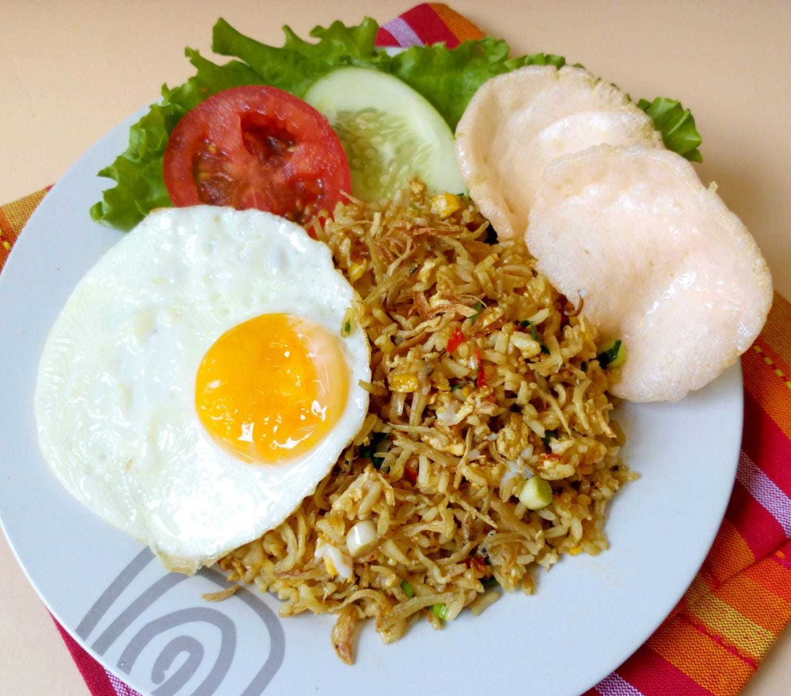

Kategori Resep

Nasi Goreng
Kategori: Sarapan

Rendang Daging
Kategori: Makan Siang
Sate Ayam
Kategori: Makan Malam
Soto Ayam
Kategori: Makan Siang
Nasi Goreng
Bahan
- 2 piring nasi putih
- 2 butir telur
- 3 siung bawang merah, iris tipis
- 2 siung bawang putih, cincang
- 1 buah cabai merah, iris
- 2 sdm kecap manis
- Garam dan merica secukupnya
- Minyak goreng secukupnya
Alat
- Wajan
- Spatula
- Piring saji
Cara Membuat
- Panaskan minyak di wajan, tumis bawang merah dan bawang putih hingga harum.
- Masukkan telur, aduk hingga matang.
- Tambahkan nasi, cabai, kecap manis, garam, dan merica. Aduk rata hingga nasi panas.
- Angkat dan sajikan di piring.
Rendang
Bahan
- 500g daging sapi, potong dadu
- 2 liter santan kelapa
- 5 lembar daun jeruk
- 3 batang serai, memarkan
- 2 cm lengkuas, memarkan
- 5 siung bawang merah
- 3 siung bawang putih
- 3 buah cabai merah
- 1 sdt ketumbar
- Garam secukupnya
Alat
- Panci besar
- Blender
- Spatula kayu
Cara Membuat
- Blender bawang merah, bawang putih, cabai, dan ketumbar hingga halus.
- Panaskan santan di panci, masukkan bumbu halus, daun jeruk, serai, dan lengkuas. Aduk rata.
- Masukkan daging sapi, masak dengan api kecil sambil diaduk hingga santan mengering dan daging empuk.
- Tambahkan garam, masak hingga rendang berwarna coklat dan berminyak.
- Angkat dan sajikan.
Sate Ayam
Bahan
- 500g daging ayam, potong kecil
- 2 sdm kecap manis
- 1 sdm minyak goreng
- 1 sdt ketumbar bubuk
- Garam secukupnya
- Tusuk sate secukupnya
- Bumbu kacang: 100g kacang tanah, 2 siung bawang putih, 1 buah cabai, air secukupnya
Alat
- Tusuk sate
- Grill atau panggangan
- Blender
- Mangkuk
Cara Membuat
- Campur daging ayam dengan kecap, minyak, ketumbar, dan garam. Diamkan 30 menit.
- Tusuk daging ayam ke tusuk sate.
- Panggang sate di atas api hingga matang dan kecoklatan.
- Untuk bumbu kacang: blender kacang tanah, bawang putih, cabai, dan air hingga halus.
- Sajikan sate dengan bumbu kacang.
Soto Ayam
Bahan
- 700g daging ayam
- 1,5 liter air
- 1 batang serai
- 2 lembar daun salam
- Garam secukupnya
- Gula secukupnya
- Minyak untuk menumis
- 3 siung bawang putih
- 6 siung bawang merah
- 2 butir kemiri
- 1cm kunyit
- 1cm jahe
- 1/2 sdt merica
- Bihun yang sudaah direndam
- Tauge
- Telur rebus
- Daun bawang
- Bawang goreng
- Gula secukupnya
- Sambal, kecap manis, jeruk nipis
Alat
- Panci ukuran sedang
- Wajan
- Pisau dan talenan
- sutil
- Mangkuk saji
Cara Membuat
- Rebus ayam dalam 1,5 liter air sampai empuk.
- Angkat ayam, suwir-suwir dagingnya, sisihkan.
- Saring air rebusan untuk dijadikan kaldu bening.
- Tumis bumbu halus bersama serai, daun salam, dan daun jeruk sampai harum dan matang.
- Masukkan tumisan bumbu ke dalam kaldu. Aduk rata.
- Tambahkan garam dan gula. Koreksi rasa. Masak hingga kuah mendidih dan beraroma sedap.
- Masukkan ayam suwir ke dalam kuah, aduk sebentar.
- Siapkan mangkuk berisi bihun, tauge, ayam suwir, dan telur rebus.
- Siram dengan kuah soto panas.
- Taburi daun bawang, seledri, dan bawang goreng.
- Sajikan bersama sambal, kecap, dan perasan jeruk nipis.